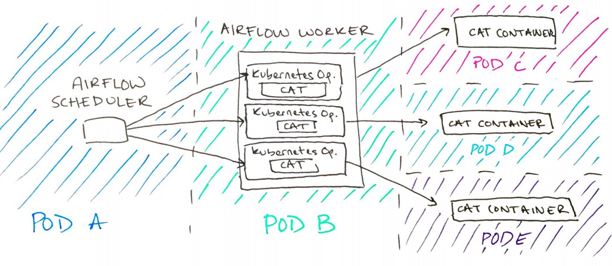

[ 2018-August-3 ]
This post was originally shared on Medium.Tl;dr: only use Kubernetes Operators.
At Bluecore, we have been investing in Airflow as our primary workflow management tool. After a few months of work and promoting the platform internally, we found that we still had low adoption across the team. Overall, engineers reported that the cost of moving workflows to Airflow was too high. Not only did they have to learn about Airflow, develop their DAGs, and test and debug in an entirely new environment, engineers frequently found themselves debugging unexpected Airflow issues (like the one we wrote about here).
When we spent time digging into the wide range of developer issues, the problem became clear: Airflow, in its design, provides the wrong abstraction. Airflow Operators, instead of simply orchestrating work to be executed, actually implement some of the functional work themselves. This means that Airflow Operators inherently combine orchestration bugs with execution bugs. In this post, I will explain how we moved away from this paradigm by creating a new Operator that provides the right abstraction, and how you can, too!
What is Airflow, anyway?
Airflow is a tool for developers to schedule, execute, and monitor their workflows. Originally developed by Airbnb, Airflow is currently an Apache incubator project. There are a few key Airflow concepts we are going to focus on in this discussion:
DAG: A DAG is a Directed Acyclic Graph that represents an individual workflow. Essentially, DAGs indicate how a workflow is going to be executed. They enumerate the steps of a workflow and the relationships between each step. DAGs are written in Python by the developer.
Operator: Operators represent what work is being executed at each step of a DAG. Operators are Python classes instantiated by the developer that map one-to-one with the functionality being executed. For example, there is an HTTPOperator that makes an HTTP request, a BigQueryOperator that executes a BigQuery query, and so on. Developers choose Operators that match the task they want to perform and put it as a step in their DAG.
Once a developer writes their DAG, they will check it in to a Github repository for their particular Airflow instance. The Airflow Scheduler, Web UI, and Worker will pick up the DAG for execution later. When a DAG is executed, the Worker will execute the work of each Operator, whether it is an HTTPOperator, a BigQueryOperator, or any other Operator, on the Airflow worker itself.
How We’re All Using Airflow Wrong
While the developer experience with Airflow may seem simple enough, we believe that there are three main problems with Airflow’s current design.
Consider the following workflow: Imagine we need to analyze the number of cat pictures viewed each day on a cat photo sharing service. This workflow would have three steps: pulling the raw cat views from an HTTP API, aggregating it per day using Google BigQuery, and pushing the results to MySQL. The DAG for this workflow would look something like this:
First, because each step of this DAG is a different functional task, each step is created using a different Airflow Operator. Developers must spend time researching, understanding, using, and debugging the Operator they want to use. This also means that each time a developer wants to perform a new type of task, they must repeat all of these steps with a new Operator. And, as we found at Bluecore, Operators are often buggy. Developer after developer moved a previously-working workflow over to Airflow only to have it brought down by an issue with an Airflow Operator itself.
As a quick example, an engineer at Bluecore wanted to create a DAG using (an old version of) the DataFlowPythonOperator. He began hitting an unexpected permissions error. Because the existing Operator paradigm necessarily combines orchestration and execution bugs, this engineer had to debug his DataFlow parameters, his DAG, and finally, the Operator itself. The process was time-consuming and added extra layers to debug compared to other workflow management tools. And, it turned out the bug was in the Operator, instilling mistrust of Airflow moving forward.
This story highlights the second problem with Airflow. Developers can quickly get started creating DAGs using the plug-and-play nature of the Operators, but in the face of any issues, the Operators themselves complicate root-cause analysis. This is because Operators themselves often handle the bulk of the work! This can range from creating connections, querying databases, parsing results, and more. Ultimately, this is abstracting away functionality that the developer should, ideally, totally understand!
The third problem is that Operators are executed on the Airflow workers themselves. The Airflow Scheduler, which runs on Kubernetes Pod A, will indicate to a Worker, which runs on Kubernetes Pod B, that an Operator is ready to be executed. At that point, the Worker will pick up the Operator and execute the work directly on Pod B. This will happen for every Operator that it executes:
This means that all Python package dependencies from each workflow will need to be installed on each Airflow Worker for Operators to be executed successfully. At Bluecore, different workflows can have very different requirements. In the best case, this means soaking up valuable memory by loading all of the packages onto each Worker (and costing more money). In the worst case, Python package conflicts could prevent workflows from being run on the same Airflow instance altogether.
These are the issues that arise simply from using Airflow in its prescribed way. Each of the problems we’ve highlighted are significant in and of themselves; together they paint a daunting picture for anyone using Airflow for production workflows. But with the existing Airflow abstractions, it didn’t feel like we had many options other than to squash bugs as they came up. Would someone have to be responsible for vetting each new Operator a Bluecore developer might want to use? Would someone have to be an expert or on-call to debug Operators? Was this project just dead in the water?
At this point, you might be wondering why we kept pursuing Airflow in spite of these issues. Overall, we still believe that the platform is a powerful tool for developers at Bluecore. We handle a wide variety of workflows on a daily basis that require advanced tooling such as complex dependency management, fan-in and fan-out, and more. In addition, Airflow provides useful tools for logging, metrics, and monitoring. So, we wanted this to work out.
How to Fix It
When we took the time to enumerate our problems with Airflow, it was evident that the Airflow Operators, the things that were supposed to make Airflow powerful and flexible, were providing the wrong abstraction to the Airflow developer. In lieu of a growing list of functionality-specific Operators, we believe that there should be a single, bug-free Operator that would be able to execute any arbitrary task. This shift would allow us to separate workflow management from workflow execution, simplifying our understanding of Airflow and our ability to quickly debug issues.
At Bluecore, we host our application on the Google Cloud Platform, using both Google App Engine and Google Kubernetes Engine. We run Airflow itself on Kubernetes, using the open-source kube-airflow project. So, in the context of Bluecore Engineering, the choice was clear: create a Kubernetes Operator.
An aside: Most of our application, at this point, still lives in App Engine. To facilitate engineers easily moving existing workflows to Airflow, we also have a wonderful AppEngineOperator that we will be writing about shortly!
Another aside: At Bluecore, we’re actually using an in-house KubernetesJobOperator (which we hope to open-source soon) to spin up Kubernetes Jobs. A similar Operator, that spins up Kubernetes Pods, is widely available via a contribution from Bloomberg. The general concepts we’re discussing here apply to both!
Here’s how the new Kubernetes Operator works:
The Airflow Worker, instead of executing any work itself, spins up Kubernetes resources to execute the Operator’s work at each step. The Operator simply executes a Docker container, polls for its completion, and returns the logs and final status code.
To illustrate the change for the Airflow developer, there are a few different ways that we could rewrite our cat DAG from earlier using this new Operator. The first option would be to write one function in one Cat Container that performs all of the necessary cat tasks in one go. This would look something like:

While this solution may make sense in some cases, it eliminates our ability to monitor and retry individual steps of the workflow. When that is necessary, there are two other ways we could rewrite this DAG.
The first option would be to still create a single Cat Container, but invoke different functionality inside of the container at each step. This allows developers to logically group all the code for one workflow together in a single package, which improves discoverability and facilitates easy testing. A DAG taking this approach would look like this:
Alternatively, teams can maintain Docker containers with common functionality for quick reuse. In our case, this would mean a HTTP container for HTTP requests, a BigQuery container for BigQuery queries, and a MySQL container for MySQL work. Here’s what this DAG would look like:
You might be thinking: is this any better than having a bunch of Operators? Yes! The difference here is this code is maintained by your team. This code will be catered to the use cases you are trying to tackle. You can have high expectations, good documentation, and someone to talk to when something goes wrong. It’s often easier to debug something when the person who wrote the bug is sitting next to you!
Are We Sure?
Yes! With this reasonably simple change, we have fixed our three problems with Airflow.
First, we immediately reduced the number of Airflow Operators a developer must be familiar with to one: the Kubernetes Operator. This simplifies the amount of time an engineer needs to spend to understand the basics of Airflow and allows them to quickly get started creating their first DAG.
We’ve also knocked out our second problem. This new Operator executes the Docker container provided by the Airflow developer without implementing any of the code itself. This shift, as we’ve explained before, separates implementation bugs from orchestration bugs. So now when there’s a bug, the developer can be fairly confident it’s theirs! Or, at least, know exactly where to find it.
And, we’ve solved our third problem. Instead of executing work on the Airflow Worker itself, the Kubernetes Operator will spin up a Kubernetes resource to execute the work (shown above). This isolates the execution of one workflow from another, eliminating the need to manage many potentially conflicting Python packages. As a bonus, this means that the code doesn’t need to be in Python at all! Developers are free to put any code they want into their Docker containers.
In addition to solving all of our previous problems with Airflow, the Kubernetes Operator comes with bonus benefits:
- The Kubernetes Operator makes Airflow even more flexible than before since developers are not limited to an existing set of Operators.
- Testing and iterating on Docker containers has proven easier than testing and iterating on DAGs.
- We have an easy, uniform way to provide credentials to the Operator (via Kubernetes Secrets) that has made permissions more explicit for the DAG creator and the DAG readers.
The Impact
Airflow, in its design, made the incorrect abstraction by having Operators actually implement functional work instead of spinning up developer work. This intermingling of code necessarily mixed orchestration and implementation bugs together. Inside of this paradigm, there are few options for an Airflow administrator to make Airflow a widely-available, production-ready resource for their team.
By simply moving to using a Kubernetes Operator, Airflow developers can develop more quickly, debug more confidently, and not worry about conflicting package requirements. At Bluecore, adoption of Airflow has skyrocketed for existing workflows and new workflows alike. Engineers are reporting a better user experience developing, testing, and monitoring their workflows. We’ve even been able to win back a few engineers who had previously buggy experiences.
So, with this relatively simple change in abstraction, Airflow has become the powerful, effective tool we knew it could be!